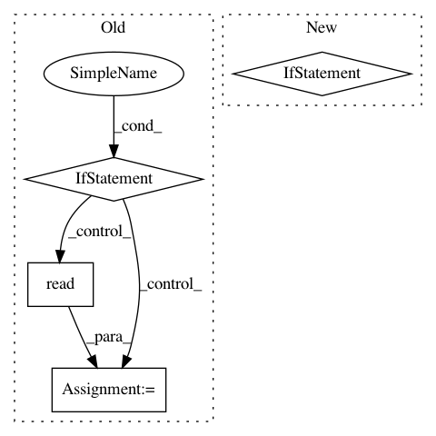

a5660329907136fbacc4729a6f9cafed871f06b3,server/init_fs.py,,,#,3
Before Change
for e in json.loads(file("../configs/custom_defaults/external.json").read()):
de,_ = ExternalServer.objects.get_or_create(name=e["name"],url=e["url"])
de.pull()
if sys.platform == "darwin":
default_models = json.loads(file("../configs/custom_defaults/trained_models_mac.json").read())
else:
default_models = json.loads(file("../configs/custom_defaults/trained_models.json").read())
for m in default_models:
if m["model_type"] == TrainedModel.DETECTOR:
dm, created = TrainedModel.objects.get_or_create(name=m["name"],algorithm=m["algorithm"],mode=m["mode"],
files=m.get("files",[]), model_filename=m.get("filename", ""),
After Change
local_models_path = "../configs/custom_defaults/trained_models.json"
if "INIT_MODELS" in os.environ and os.environ["INIT_MODELS"].strip():
remote_models_path = os.environ["INIT_MODELS"]
if not remote_models_path.startswith("/root/DVA/configs/custom_defaults/"):
local_models_path = "custom_models.json"
get_path_to_file(remote_models_path, local_models_path)
else:
local_models_path = remote_models_path
default_models = json.loads(file(local_models_path).read())
for m in default_models:
if m["model_type"] == TrainedModel.DETECTOR:
dm, created = TrainedModel.objects.get_or_create(name=m["name"],algorithm=m["algorithm"],mode=m["mode"],
In pattern: SUPERPATTERN
Frequency: 3
Non-data size: 4
Instances
Project Name: AKSHAYUBHAT/DeepVideoAnalytics
Commit Name: a5660329907136fbacc4729a6f9cafed871f06b3
Time: 2018-03-31
Author: akshayubhat@gmail.com
File Name: server/init_fs.py
Class Name:
Method Name:
Project Name: AKSHAYUBHAT/DeepVideoAnalytics
Commit Name: 3dee7d5b874df317e9e0ba936a4b1451c6116ba0
Time: 2018-08-31
Author: akshayubhat@gmail.com
File Name: server/init_fs.py
Class Name:
Method Name: init_models
Project Name: AlexEMG/DeepLabCut
Commit Name: ccdc36ed8d463609a21bd76cf51ad24c9c4b9f11
Time: 2020-05-16
Author: amathis@fas.harvard.edu
File Name: deeplabcut/generate_training_dataset/frame_extraction.py
Class Name:
Method Name: select_cropping_area